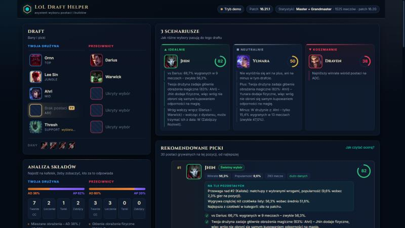

LoL Draft Helper
Darmowy asystent do League of Legends: lepszy pick w champ selekcie, build pod skład wroga i runy ustawione same – zanim zacznie się gra.
Pobierz dla Windows Darmowa, bez reklam · otwarty kod: GitHub
Co potrafi
Ranking postaci na Twoją pozycję: siła na patchu, kontry na wybranych wrogów, synergia z drużyną i braki w składzie.
Core, przedmioty sytuacyjne pod skład przeciwnika, runy, czary i kolejność umiejętności – plus inne warianty graczy.
Po zablokowaniu postaci runy, czary i zestaw przedmiotów w sklepie ustawiają się same (tylko własne strony aplikacji).
Postacie, którymi grasz najczęściej i najlepiej, dostają premię w rekomendacjach.
Pierwszy clear zależny od strony mapy i linie warte ganku na podstawie draftu.
Najmocniejsze postacie na patchu, strona każdej postaci z buildem, matchupami i synergiami, archetypy składów.
Jak zacząć
- Pobierz instalator z ostatniego wydania i uruchom go.
- Jeśli Windows pokaże „System Windows ochronił ten komputer”, kliknij Więcej informacji → Uruchom mimo to.
- Włącz klienta League of Legends i wejdź do champ selectu – rekomendacje pojawią się same.
Statystyki pochodzą z rankingowych meczów graczy Master i Grandmaster. Aplikacja aktualizuje się sama.